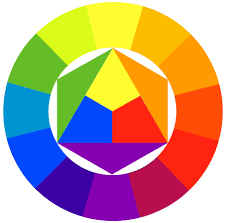

Teoría del color.
La teoría del color es un conjunto de reglas y principios que explican cómo se mezclan, combinan y perciben los colores, organizados en el círculo cromático, para crear efectos visuales y armonía, fundamental en arte, diseño, imprenta (CMYK) y pantallas (RGB), abordando aspectos físicos, psicológicos y culturales de la percepción del color.
